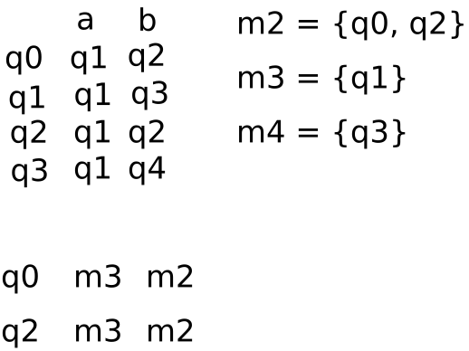

Diagrama a bloques del proceso de construcción de un analizador léxico
Estamos en la conversión de ER a AFN. Usando la construcción de Thompson:

Algoritmo de subconjuntos
De la siguiente ER convertirla en AFD:
(a|b)* abb
El vocavulario se presenta en seguida:
Σ = {a, b}
El AFN obtenido de aplicar la construcción de Thompson, es el siguiente:
Se obtiene el estado q0:
cerradura-ε((0)) = {0, 1, 2, 3, 5, 8} = q0
Movimiento para el estado q0:
q0 = {0, 1, 2, 3, 5, 8}
cerradura-ε(mov(q0, a)) = cerradura-ε({4, 9}) = {4, 9, 7, 8, 2, 3, 5} = q1
cerradura-ε(mov(q0, b)) = cerradura-ε({6}) = {6, 7, 8, 2, 3, 5} = q2
Movimiento para el estado q1:
q1 = {4, 9, 7, 8, 2, 3, 5}
cerradura-ε(mov(q1, a)) = cerradura-ε({4, 9}) = {4, 9, 7, 8, 2, 3, 5} = q1
cerradura-ε(mov(q1, b)) = cerradura-ε({6, 10}) = {6, 10, 7, 8, 2, 3, 5} = q3
Movimiento para el estado q2:
q2 = {6, 7, 8, 2, 3, 5}
cerradura-ε(mov(q2, a)) = cerradura-ε({4, 9}) = {4, 9, 7, 8, 2, 3, 5} = q1
cerradura-ε(mov(q2, b)) = cerradura-ε({6}) = {6, 7, 8, 2, 3, 5} = q2
Movimiento para el estado q3:
q3 = {6, 10, 7, 8, 2, 3, 5}
cerradura-ε(mov(q3, a)) = cerradura-ε({4, 9}) = {4, 9, 7, 8, 2, 3, 5} = q1
cerradura-ε(mov(q3, b)) = cerradura-ε({6, 11}) = {6, 11, 7, 8, 2, 3, 5} = q4
Movimiento para el estado q4:
q4 = {6, 11, 7, 8, 2, 3, 5}
cerradura-ε(mov(q4, a)) = cerradura-ε({4, 9}) = {4, 9, 7, 8, 2, 3, 5} = q1
cerradura-ε(mov(q4, b)) = cerradura-ε({6}) = {6, 7, 8, 2, 3, 5} = q2
El autómata AFD obtenido es el siguiente:
Algoritmo de minimización por consistencia
El autómata AFD obtenido de la minimización, es el siguiente:
Se utiliza el algoritmo de minimización por consistencia. Se comienza haciendo dos grupos de estados:
El grupo de los estados no finales:
m0 = {q0, q1, q2, q3}
El grupo de los estados finales:
m1 = {q4}
La siguiente figura es la aplicación de la consistencia:

De la aplicación de la consistencia se obtiene el AFD mínimo:
El siguiente autómata se obtiene de aplicar el método del árbol: